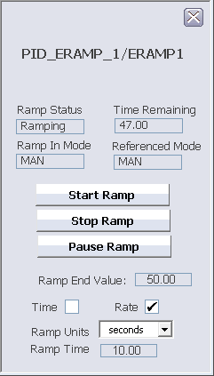

Enhanced Ramp function block faceplate (ERAMP_FB_FP)
DeltaV Operate view of the Enhanced Ramp function block
faceplate (ERAMP_FB_FP)

The Enhanced Ramp function block faceplate contains the following
items:
- Ramp Status – The state of the ramp: Complete, Enabled, Paused, Ramping, or Stopped.
- Time Remaining – The time remaining until ramp calculation concludes.
- Ramp In Mode – The mode of the ramp: AUTO, LO, MAN, RCAS, or ROUT.
To start ramping, the current mode of the target function block must match the mode of the Enhanced Ramp function block. If the modes do not match, the ramp is disabled.
- Referenced Mode – The mode of the target function block with which the Enhanced Ramp function block is associated.
- Start Ramp button – Clicking the Start Ramp button starts the ramp if it has been stopped or paused.
- Stop Ramp button – Clicking the Stop Ramp button stops the ramp if it is ramping or has been paused.
- Pause Ramp button – Clicking the Pause Ramp button pauses the ramp if it is ramping.
- Ramp End Value – The value configured for the ERAMP_END_VALUE parameter of the ramp.
- Ramp Type – Indicates how the ERAMP_TYPE parameter of the ramp is configured:
- Time check box – The ramp is configured with the Use Time parameter option.
- Rate check box – The ramp is configured with the Use Rate parameter option.
- Ramp Units – The unit of time that the ramp is configured to use: seconds, minutes, hours, or days.
- Ramp Time – The time period for the output to ramp from its initial value to its ramp end point input value.
For more information, refer to the Enhanced Ramp function block topic.